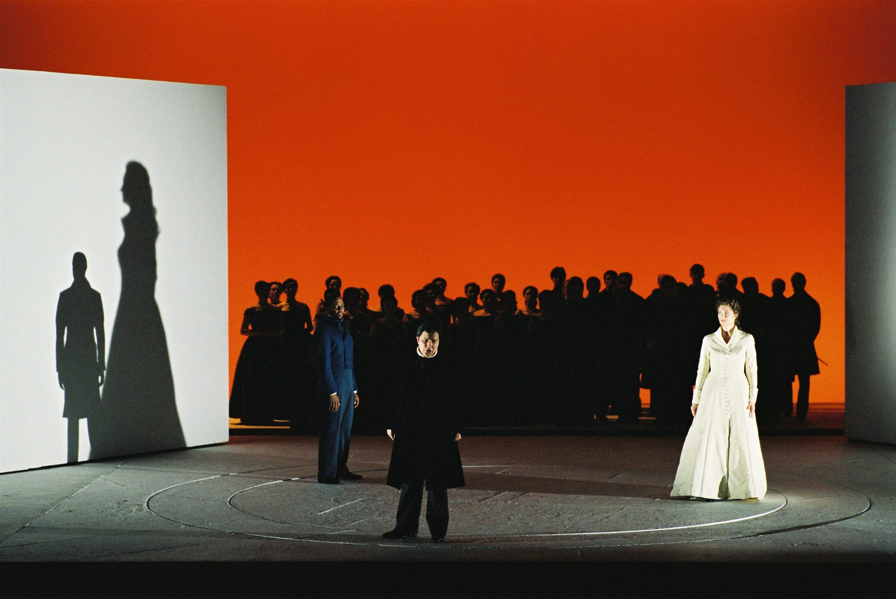
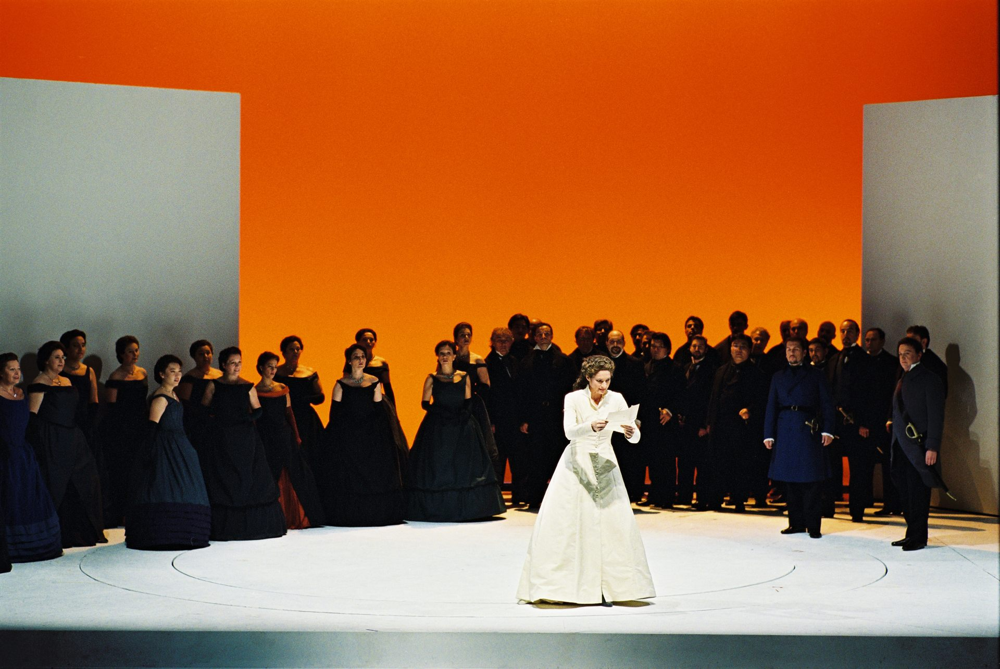
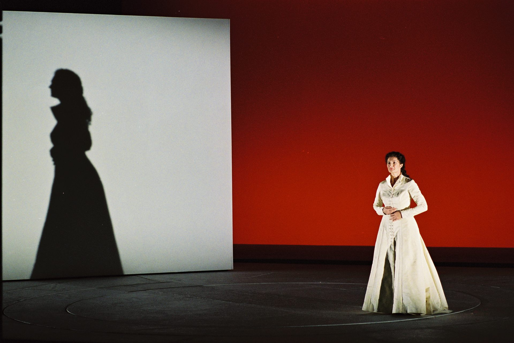
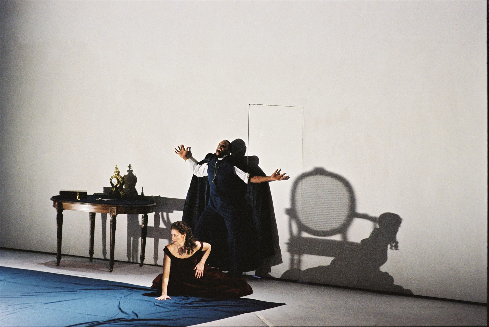
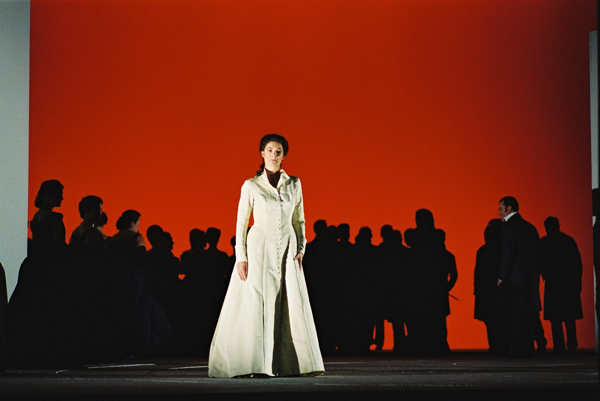
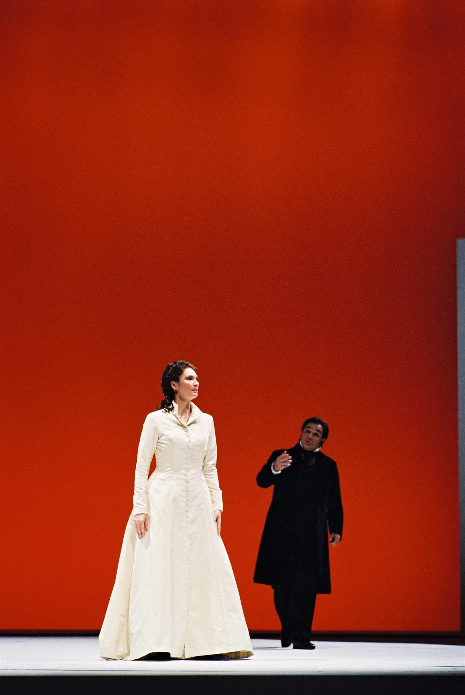
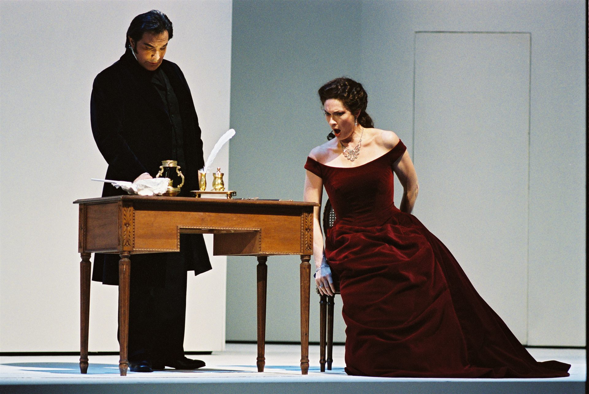

Per il Teatro La Fenice di Venezia, nel 1999, Cristian Taraborrelli firma i costumi — con la co-firma del regista Giorgio Barberio Corsetti — di Maria di Rohan di Gaetano Donizetti, opera tarda del compositore bergamasco (1843), su libretto di Salvadore Cammarano dal dramma di Lockroy. La direzione musicale è di Gianluigi Gelmetti, una delle bacchette di riferimento del belcanto italiano della seconda metà del Novecento. La produzione è il punto d'origine del sodalizio operistico fra Cristian Taraborrelli e Corsetti che attraverserà un quarto di secolo, da questa Fenice del 1999 al Pagliacci AR di Genova del 2021.
L'opera — una delle più tragiche e meno frequentate del Donizetti maturo — racconta un triangolo amoroso nella corte di Luigi XIII di Francia: Maria, sposata in segreto al duca di Chevreuse, e amata dal conte Riccardo di Chalais; l'epilogo è il duello, l'umiliazione, la rivelazione che innesca la catastrofe. Donizetti scrive una partitura di concentrazione drammatica estrema, un atto unico di tre quadri, senza interruzioni né intermezzi, costruito sull'inarrestabile precipitare degli eventi.
For Teatro La Fenice in Venice, in 1999, Cristian Taraborrelli signs the costumes — co-signed with director Giorgio Barberio Corsetti — of Maria di Rohan by Gaetano Donizetti, a late opera by the Bergamasco composer (1843), to a libretto by Salvadore Cammarano after Lockroy's drama. The musical direction is by Gianluigi Gelmetti, one of the reference batons of Italian bel canto in the second half of the twentieth century. The production is the point of origin of the operatic partnership between Cristian Taraborrelli and Corsetti that will run across a quarter century, from this 1999 Fenice to Pagliacci AR in Genoa 2021.
The work — one of the most tragic and least often performed of mature Donizetti — tells of a love triangle at the court of Louis XIII of France: Maria, secretly married to the Duke of Chevreuse, and loved by Count Riccardo of Chalais; the epilogue is the duel, the humiliation, the revelation that triggers the catastrophe. Donizetti writes a score of extreme dramatic concentration, a single act in three tableaux, without breaks or intermezzos, built on the unstoppable plunge of events.
Pour le Teatro La Fenice de Venise, en 1999, Cristian Taraborrelli signe les costumes — cosignés avec le metteur en scène Giorgio Barberio Corsetti — de Maria di Rohan de Gaetano Donizetti, opéra tardif du compositeur bergamasque (1843), sur un livret de Salvadore Cammarano d'après le drame de Lockroy. La direction musicale est de Gianluigi Gelmetti, l'une des baguettes de référence du bel canto italien de la seconde moitié du XXe siècle. La production est le point d'origine du sodalité opératique entre Cristian Taraborrelli et Corsetti qui traversera un quart de siècle, de cette Fenice de 1999 jusqu'à Pagliacci AR à Gênes en 2021.
L'œuvre — l'une des plus tragiques et des moins jouées du Donizetti tardif — raconte un triangle amoureux à la cour de Louis XIII de France : Maria, mariée en secret au duc de Chevreuse, et aimée par le comte Riccardo de Chalais ; l'épilogue est le duel, l'humiliation, la révélation qui déclenche la catastrophe. Donizetti écrit une partition de concentration dramatique extrême, un acte unique en trois tableaux, sans interruptions ni intermezzi, bâti sur la chute imparable des événements.
L'Opera — Il Donizetti tardo, la concentrazione tragica
Maria di Rohan è la sessantaduesima opera di Donizetti, scritta in poche settimane fra l'inverno e la primavera del 1843, e debutta al Kärntnertortheater di Vienna il 5 giugno 1843. L'autore è al colmo della sua carriera europea: solo un anno prima ha portato in scena Linda di Chamounix e Don Pasquale, sta dirigendo come Hofkapellmeister la Hofoper viennese, è la voce italiana più richiesta del continente. Sarà però la sua ultima opera completa: pochi mesi più tardi i sintomi della malattia che lo porterà alla morte (1848) ne minano gradualmente la lucidità.
La fonte è il dramma Un duel sous le cardinal de Richelieu dello scrittore francese Lockroy (pseudonimo di Joseph-Philippe-Simon Lockroy), già adattato da Cammarano per il Conte di Chalais di Lillo (Napoli 1839): Donizetti riconosce nel materiale uno scheletro drammatico fortissimo e chiede a Cammarano di rifondere il vecchio libretto in una partitura serrata, in cui non vi siano arie di sortita prolungate ma cabalette che precipitano già in dramma, recitativi che sostituiscono i numeri canonici, un finale-duello che invece di celebrare il pathos lo nega bruscamente. È il verismo prima del verismo: Verdi, in privato, dichiarerà di aver imparato molto da quest'opera.
La storia: Parigi, corte di Luigi XIII, anni 1620-30. Maria di Rohan ha sposato in segreto il duca di Chevreuse; un duca tradisce il cardinale Richelieu e viene condannato a morte. Maria, per salvarlo, supplica l'aiuto del conte Riccardo di Chalais, che la ama segretamente. Chevreuse viene salvato, ma scopre la lettera in cui Chalais dichiara il proprio amore alla moglie. Sfida Chalais a duello e lo uccide. Maria, davanti al cadavere dell'uomo amato e al marito furibondo, è lasciata in scena con un grido finale: la rivelazione del proprio amore non corrisposto al marito che ora la dispera per sempre. Sipario.
Maria di Rohan is Donizetti's sixty-second opera, written in a few weeks between winter and spring 1843, premiered at the Kärntnertortheater in Vienna on 5 June 1843. The author is at the peak of his European career: just one year earlier he had staged Linda di Chamounix and Don Pasquale, he is conducting as Hofkapellmeister of the Vienna Hofoper, he is the most sought-after Italian voice on the continent. It would, however, be his last complete opera: a few months later the symptoms of the illness that would lead to his death (1848) gradually undermine his lucidity.
The source is the drama Un duel sous le cardinal de Richelieu by French writer Lockroy (pen name of Joseph-Philippe-Simon Lockroy), already adapted by Cammarano for Lillo's Conte di Chalais (Naples 1839): Donizetti recognises in the material an extremely strong dramatic skeleton and asks Cammarano to recast the old libretto into a tightened score, in which there are no prolonged entrance arias but cabalettas that already plunge into drama, recitatives replacing canonical numbers, a duel-finale that instead of celebrating pathos abruptly denies it. It is verismo before verismo: Verdi would privately declare to have learned much from this opera.
The story: Paris, court of Louis XIII, 1620-30s. Maria di Rohan has secretly married the Duke of Chevreuse; a duke betrays Cardinal Richelieu and is sentenced to death. To save him, Maria begs the help of Count Riccardo di Chalais, who secretly loves her. Chevreuse is saved, but discovers the letter in which Chalais declares his love for the wife. He challenges Chalais to a duel and kills him. Maria, before the corpse of the man she loves and the furious husband, is left on stage with a final cry: the revelation of her unrequited love to the husband who now despairs of her forever. Curtain.
Maria di Rohan est le soixante-deuxième opéra de Donizetti, écrit en quelques semaines entre l'hiver et le printemps 1843, créé au Kärntnertortheater de Vienne le 5 juin 1843. L'auteur est au sommet de sa carrière européenne : seulement un an plus tôt il a porté à la scène Linda di Chamounix et Don Pasquale, il dirige comme Hofkapellmeister le Hofoper viennois, il est la voix italienne la plus demandée du continent. Ce sera pourtant son dernier opéra complet : quelques mois plus tard les symptômes de la maladie qui le conduira à la mort (1848) minent peu à peu sa lucidité.
La source est le drame Un duel sous le cardinal de Richelieu de l'écrivain français Lockroy (pseudonyme de Joseph-Philippe-Simon Lockroy), déjà adapté par Cammarano pour le Conte di Chalais de Lillo (Naples 1839) : Donizetti reconnaît dans le matériau un squelette dramatique très fort et demande à Cammarano de refondre l'ancien livret en une partition resserrée, dans laquelle il n'y ait pas d'airs d'entrée prolongés mais des cabalettes qui précipitent déjà dans le drame, des récitatifs remplaçant les numéros canoniques, un finale-duel qui, au lieu de célébrer le pathos, le nie brusquement. C'est le verismo avant le verismo : Verdi déclarera en privé avoir beaucoup appris de cet opéra.
L'histoire : Paris, cour de Louis XIII, années 1620-30. Maria di Rohan a épousé en secret le duc de Chevreuse ; un duc trahit le cardinal de Richelieu et est condamné à mort. Pour le sauver, Maria implore l'aide du comte Riccardo de Chalais, qui l'aime en secret. Chevreuse est sauvé, mais découvre la lettre dans laquelle Chalais déclare son amour à sa femme. Il défie Chalais en duel et le tue. Maria, devant le cadavre de l'homme aimé et le mari furieux, est laissée en scène avec un cri final : la révélation de son amour non partagé au mari qui désormais la désespère à jamais. Rideau.
La Visione — L'origine del sodalizio Cristian-Corsetti
La regia di Corsetti rifiuta sia il filologismo seicentesco (corti, parrucche bianche, mantelli da cardinale) sia la trasposizione contemporanea forzata: cerca uno spazio mentale e simbolico, un teatro dell'interno barocco dove i corpi pesano, le distanze fra i tre protagonisti diventano misurabili in passi, le porte e i pannelli scorrevoli evocano gli appartamenti reali del Louvre come stanze interiori dei personaggi. Il pubblico vede meno l'arredo storico e più le posture dei tre protagonisti, le tensioni fisiche del triangolo, l'inevitabilità geometrica della catastrofe.
I costumi che Cristian co-firma con Corsetti rispondono a questa logica: silhouette barocche essenziali, ritagliate con tagli moderni, pesi e tessuti che sostengono il movimento dell'attore, una palette ridotta a tre colori (nero per la corte e Chevreuse, rosso per Chalais, bianco-avorio per Maria) che traduce visivamente il triangolo amoroso. Niente brocchi pieni di passamaneria, niente parrucche accademiche: la verità del corpo dell'attore-cantante prima della cifra storica. È in questo lavoro che si codifica l'estetica costumistica dello studio Taraborrelli che attraverserà tutte le produzioni successive del sodalizio Corsetti.
La Fenice in 1999 calls Giorgio Barberio Corsetti to direct Maria di Rohan after the years in which the director ran the Festival d'Avignon (1996–99) and consolidated at European level his signature as a director of moving images applied to the stage. Corsetti brings with him a young Italian costume designer with whom he has already shared rehearsals and tailoring boards at the Festival d'Avignon: Cristian Taraborrelli. For Cristian, it is his first major operatic work: La Fenice is one of the three most important opera houses in Italy (along with La Scala and the San Carlo), and Donizetti is a title of great performing tradition.
Corsetti's direction refuses both seventeenth-century philological dress (courts, white wigs, cardinal cloaks) and forced contemporary transposition: it seeks a mental and symbolic space, a theatre of the baroque interior where bodies weigh, distances between the three protagonists become measurable in steps, doors and sliding panels evoke the royal apartments of the Louvre as interior rooms of the characters. The audience sees less of the historical setting and more of the postures of the three protagonists, the physical tensions of the triangle, the geometric inevitability of the catastrophe.
The costumes Cristian co-signs with Corsetti answer this logic: essential baroque silhouettes, cut with modern lines, weights and fabrics that support the actor's movement, a palette reduced to three colours (black for the court and Chevreuse, red for Chalais, ivory white for Maria) that visually translates the love triangle. No brocades full of trimmings, no academic wigs: the truth of the actor-singer's body before the historical signature. It is in this work that the costume aesthetic of the Taraborrelli studio is codified, the one that will run across all later productions of the Corsetti partnership.
La Fenice en 1999 appelle Giorgio Barberio Corsetti pour la mise en scène de Maria di Rohan après les années où le metteur en scène a dirigé le Festival d'Avignon (1996–99) et consolidé au niveau européen sa signature de metteur en scène d'images en mouvement appliquée à la scène. Corsetti emmène avec lui un jeune costumier italien avec qui il a déjà partagé répétitions et tables de coupe au Festival d'Avignon : Cristian Taraborrelli. Pour Cristian, c'est le premier grand travail lyrique : la Fenice est l'un des trois opéras les plus importants d'Italie (avec la Scala et le San Carlo), et Donizetti est un titre de grande tradition d'interprétation.
La mise en scène de Corsetti refuse à la fois le philologisme XVIIe (cours, perruques blanches, manteaux de cardinaux) et la transposition contemporaine forcée : elle cherche un espace mental et symbolique, un théâtre de l'intérieur baroque où les corps pèsent, les distances entre les trois protagonistes deviennent mesurables en pas, portes et panneaux coulissants évoquent les appartements royaux du Louvre comme des chambres intérieures des personnages. Le public voit moins l'ameublement historique et davantage les postures des trois protagonistes, les tensions physiques du triangle, l'inévitabilité géométrique de la catastrophe.
Les costumes que Cristian cosigne avec Corsetti répondent à cette logique : silhouettes baroques essentielles, taillées avec des coupes modernes, poids et tissus qui soutiennent le mouvement de l'acteur, une palette réduite à trois couleurs (noir pour la cour et Chevreuse, rouge pour Chalais, blanc-ivoire pour Maria) qui traduit visuellement le triangle amoureux. Pas de brocarts couverts de passementerie, pas de perruques académiques : la vérité du corps de l'acteur-chanteur avant la signature historique. C'est dans ce travail que se codifie l'esthétique costumière du studio Taraborrelli qui traversera toutes les productions ultérieures du sodalité Corsetti.
Galleria







I Collaboratori
Direttore d'orchestra
Gianluigi Gelmetti (Roma, 1945 – Monaco, 2021)
Direttore d'orchestra italiano fra i più importanti della seconda metà del Novecento, allievo di Franco Ferrara a Roma e di Sergiu Celibidache a Siena. Direttore musicale del Teatro dell'Opera di Roma (2000–09), del Teatro Massimo di Palermo, del Teatro La Fenice di Venezia, della Sydney Symphony Orchestra (2004–09), del Maggio Musicale Fiorentino. Specialista assoluto del repertorio belcantistico e rossiniano (storico direttore del Rossini Opera Festival), è stato uno dei massimi conoscitori della scrittura tarda di Donizetti, di cui ha diretto pressoché tutto il catalogo. Per Maria di Rohan alla Fenice 1999 conduce una lettura asciutta e tagliente, perfettamente in sintonia con la regia secca di Corsetti. Cristian Taraborrelli ritroverà Gelmetti dieci anni dopo per I Due Foscari al Capitole di Toulouse (2014).
Regia e co-firma costumi
Giorgio Barberio Corsetti (Roma, 1951)
Co-fondatore della Gaia Scienza nel 1976, direttore del Festival d'Avignon (1996–99), del Romaeuropa Festival, della Biennale Teatro di Venezia (2010–12), del Teatro Argentina di Roma. Ha attraversato la grande stagione del teatro postdrammatico italiano in dialogo con la scena europea. Per Maria di Rohan è alla sua seconda regia operistica (dopo Il prigioniero di Dallapiccola alla Fenice 1996) e firma con Cristian Taraborrelli i costumi: l'incontro di linguaggi codifica un'estetica di essenzialità barocca che attraverserà tutto il catalogo lirico successivo del sodalizio.
Compositore
Gaetano Donizetti (Bergamo, 1797 – Bergamo, 1848)
Bergamasco, allievo di Mayr, fra i tre «giganti del belcanto» (con Bellini e Rossini). Compose oltre 70 opere in trent'anni, attraversando il dramma serio (Anna Bolena, Lucia di Lammermoor, Maria Stuarda, Roberto Devereux), la commedia (L'elisir d'amore, Don Pasquale, La fille du régiment) e il grand opéra (La favorite, Dom Sébastien). Maria di Rohan è la sua ultima opera completa, prima del declino e della morte. Donizetti vi cerca una concentrazione drammatica nuova, un teatro musicale che precorre il Verdi del Macbeth e dei Due Foscari: una breviloquenza tragica che la critica novecentesca ha rivalutato come uno dei vertici della sua scrittura.
Conductor
Gianluigi Gelmetti (Rome, 1945 – Monaco, 2021)
Italian conductor, among the most important of the second half of the twentieth century, pupil of Franco Ferrara in Rome and of Sergiu Celibidache in Siena. Music director of Teatro dell'Opera di Roma (2000–09), Teatro Massimo Palermo, Teatro La Fenice Venice, Sydney Symphony Orchestra (2004–09), Maggio Musicale Fiorentino. Absolute specialist of bel canto and Rossinian repertoire (historic conductor of the Rossini Opera Festival), he was among the greatest experts of Donizetti's late writing, of whose catalogue he conducted almost the entirety. For Maria di Rohan at La Fenice 1999 he leads a dry, sharp reading, perfectly in tune with Corsetti's lean direction. Cristian Taraborrelli would meet Gelmetti again ten years later for I Due Foscari at Toulouse Capitole (2014).
Direction & Costume Co-signature
Giorgio Barberio Corsetti (Rome, 1951)
Co-founder of Gaia Scienza in 1976, director of Festival d'Avignon (1996–99), of Romaeuropa Festival, of Venice Biennale Teatro (2010–12), of Teatro Argentina in Rome. He crossed the great season of Italian post-dramatic theatre in dialogue with the European scene. For Maria di Rohan he is at his second operatic direction (after Dallapiccola's Il prigioniero at La Fenice 1996) and co-signs the costumes with Cristian Taraborrelli: the encounter of languages codifies an aesthetic of baroque essentiality that will run across the partnership's whole subsequent operatic catalogue.
Composer
Gaetano Donizetti (Bergamo, 1797 – Bergamo, 1848)
Bergamasco, pupil of Mayr, one of the three «giants of bel canto» (with Bellini and Rossini). He composed over 70 operas in thirty years, crossing serious drama (Anna Bolena, Lucia di Lammermoor, Maria Stuarda, Roberto Devereux), comedy (L'elisir d'amore, Don Pasquale, La fille du régiment) and grand opéra (La favorite, Dom Sébastien). Maria di Rohan is his last complete opera, before decline and death. Donizetti seeks here a new dramatic concentration, a musical theatre foreshadowing Verdi of Macbeth and of I Due Foscari: a tragic brevity that twentieth-century criticism has rediscovered as one of the peaks of his writing.
Chef d'orchestre
Gianluigi Gelmetti (Rome, 1945 – Monaco, 2021)
Chef d'orchestre italien parmi les plus importants de la seconde moitié du XXe siècle, élève de Franco Ferrara à Rome et de Sergiu Celibidache à Sienne. Directeur musical du Teatro dell'Opera de Rome (2000–09), du Teatro Massimo de Palerme, du Teatro La Fenice de Venise, de la Sydney Symphony Orchestra (2004–09), du Maggio Musicale Fiorentino. Spécialiste absolu du répertoire belcantiste et rossinien (chef historique du Rossini Opera Festival), il fut parmi les plus grands connaisseurs de l'écriture tardive de Donizetti, dont il a dirigé presque tout le catalogue. Pour Maria di Rohan à la Fenice en 1999, il mène une lecture sèche et tranchante, parfaitement en phase avec la mise en scène ramassée de Corsetti. Cristian Taraborrelli retrouvera Gelmetti dix ans plus tard pour I Due Foscari au Capitole de Toulouse (2014).
Mise en scène & cosignature des costumes
Giorgio Barberio Corsetti (Rome, 1951)
Cofondateur de Gaia Scienza en 1976, directeur du Festival d'Avignon (1996–99), du Romaeuropa Festival, de la Biennale Théâtre de Venise (2010–12), du Teatro Argentina de Rome. Il a traversé la grande saison du théâtre postdramatique italien en dialogue avec la scène européenne. Pour Maria di Rohan, il en est à sa deuxième mise en scène lyrique (après Il prigioniero de Dallapiccola à la Fenice 1996) et cosigne avec Cristian Taraborrelli les costumes : la rencontre des langages codifie une esthétique d'essentialité baroque qui traversera tout le catalogue lyrique ultérieur du sodalité.
Compositeur
Gaetano Donizetti (Bergame, 1797 – Bergame, 1848)
Bergamasque, élève de Mayr, l'un des trois « géants du bel canto » (avec Bellini et Rossini). Il composa plus de 70 opéras en trente ans, traversant le drame sérieux (Anna Bolena, Lucia di Lammermoor, Maria Stuarda, Roberto Devereux), la comédie (L'elisir d'amore, Don Pasquale, La fille du régiment) et le grand opéra (La favorite, Dom Sébastien). Maria di Rohan est son dernier opéra complet, avant le déclin et la mort. Donizetti y cherche une concentration dramatique nouvelle, un théâtre musical qui précède le Verdi de Macbeth et des Deux Foscari : une bréviloquence tragique que la critique du XXe siècle a réévaluée comme l'un des sommets de son écriture.
Tags